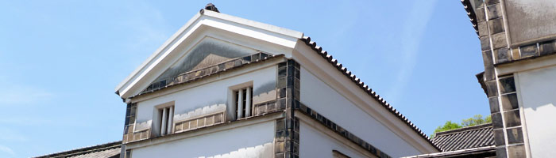
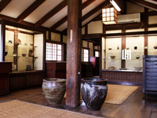
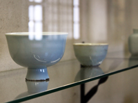
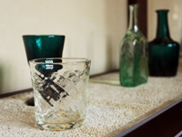
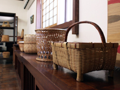
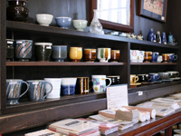

KURASHIKI MUSEUM OF FOLK CRAFTS倉敷民藝館

江戸時代末期の米蔵を4棟改装し、1948年（昭和23年）に開館した倉敷民藝館は、古民家利用第一号の建物です。
昭和19年に倉敷に訪れた初代館長外村吉之介は町並みに深く感動し、この風景を残さなければいけないと地道に地域の人達を説いて回ったことで、伝統的建造物保存のきっかけとなりました。
館内の展示品は、国内外問わず世界の民芸品約15,000点の陶磁器、漆器、ガラス器、竹細工、染物、織物、金工品、皮工品、木工品などが所蔵されており、その内の約300点が展示されています。
※年3回、季節などに応じて陳列替えが行われます。
焼き物の部屋

倉敷の酒津堤窯、酒津榎窯、遊楽窯、羽島焼などを中心に四国や山陰の焼き物を展示しています。また焼き物に敷かれているイ草を使った倉敷緞通は、湿度調節の役割をしています。
李朝の部屋

乳白色の李氏朝鮮王朝時代の焼き物は、柳宗悦が東洋の品物の美しさを知り、民芸運動を行うきっかけになりました。その他、朝鮮木工品が展示されています。
廊下

李朝と籠の部屋を繋ぐ廊下には倉敷ガラスが展示されています。外村吉之介が命名した倉敷ガラスは、初期の段階から制作指導を行っていたこともあり、作品は小谷真三さんの初期から現在のものまで展示されています。
籠の部屋

全国の民藝館の中でも籠の所蔵品が多いのが倉敷。農閑期に身近な素材を使って作る籠は、土地それぞれの手作りの良さを伝えてくれます。また、日本のみならず世界各国の籠も展示されています。
ミュージアムショップ

民芸品の良さを実感してもらえるよう館内の受付前では、倉敷や近県の焼き物、倉敷ガラス、倉敷緞通、備中和紙、民芸に関する書籍など販売しています。
一覧に戻る